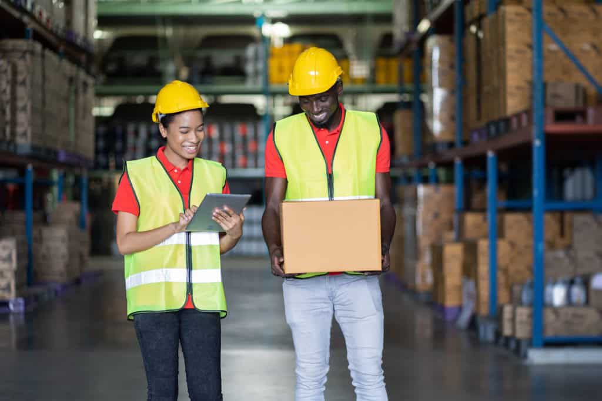
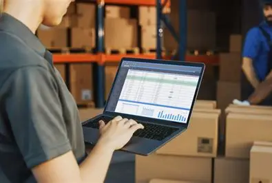
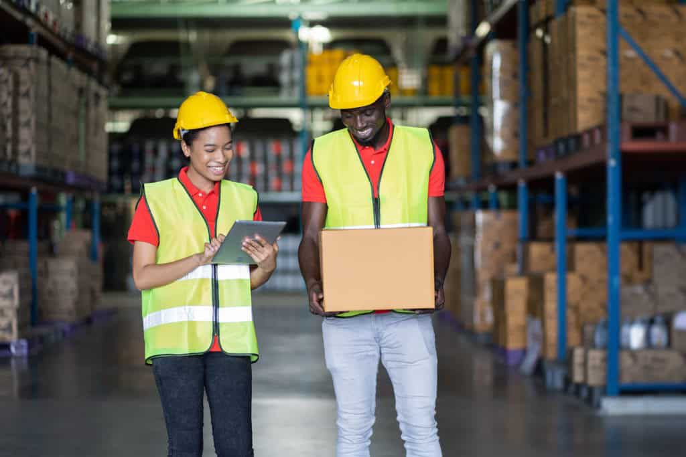
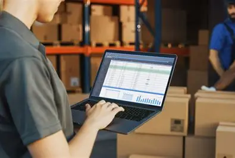

Qui sommes-nous ?
Chez ORYX LOGISTICS, nous sommes passionnés par la logistique et le transport. Forts de notre expertise, nous nous engageons à offrir des solutions fiables, efficaces et innovantes pour tous vos besoins. Découvrez les chiffres qui témoignent de notre engagement et de notre succès au quotidien.
Tournées Par Jour
de Colis Livrés Dans Les Temps
De colis Livrés par jours
SAV disponible
de livraison verte
Durée de livraison
Comment ça fonctionne ?
De la réception à la livraison finale, notre processus optimisé garantit une efficacité maximale et une transparence totale.
CATÉGORIE DE LIVRAISON
Chez Oryx transport nous vous proposons plusieurs solutions de livraison notamment les livraisons : Express, Same Day J+0, Next Day (J+1), Livraison standard
PICK UP & TRI
Nous déployons nos livreurs au sein de votre dépôt pour assurer le tri, le scan et un chargement optimisé des colis dans chaque camion.
SUIVI ET ACHEMINEMENT
Dès la sortie du dépôt, nos équipes pilotent la tournée en temps réel pour anticiper les aléas et optimiser chaque étape du parcours.
LIVRAISON FINALE
Chaque colis est remis en main propre dans le respect des délais, avec une confirmation instantanée et une preuve de livraison.
 



Nos Services Last Mile B2B
Découvrez l'éventail complet de nos solutions logistiques taillées sur mesure pour optimiser vos opérations et garantir la ponctualité de vos marchandises.
Notre solution de livraison flexible et fiable est adaptée à vos besoins, avec suivi en temps réel et communication proactive.
- Respect strict des créneaux horaires.
- Gestion des volumes variables et pics saisonniers.
- Reporting détaillé et transparent.
- Disponibilité et assistance permanente.
Nous assurons la prise en charge des retours et enlèvements programmés ou urgents, avec traçabilité complète.
- Reverse logistics optimisée.
- Collecte multi-sites planifiée efficacement.
- Acheminement vers hubs partenaires.
- Suivi et notifications automatisées.
Algorithmes intelligents pour optimiser les itinéraires, réduire les coûts et améliorer la ponctualité.
- Optimisation des trajets en temps réel.
- Réduction des coûts et de l'empreinte carbone.
- Planification adaptée aux zones urbaines et rurales.
- Flexibilité face aux changements de dernière minute.
Notre Flotte & Équipe
Flotte moderne et experts du dernier kilomètre pour des livraisons fiables et sécurisées.
Des véhicules Renault Trafic, Renault Master et électriques, fiables et adaptés aux livraisons urbaines.
- Renault Trafic 6m³ : taille moyenne.
- Renault Master 12m³ : grands volumes.
- Électriques : écologiques pour le last mile.
- GPS & tracking temps réel.
- Maintenance régulière pour sécurité.
Chauffeurs formés au last mile et à l’éco-conduite, garantissant sécurité et ponctualité.
- Formation continue.
- Éco-conduite et sécurité des colis.
- Gestion efficace des tournées et relation client.
Nos équipes sont constamment formées pour un service optimal.
Intégrez ORYX TL et contribuez à l’excellence de la livraison du dernier kilomètre.
- Talents motivés et rigoureux.
- Orientation client et formation professionnelle.
- Opportunités d’évolution et participation active.
Notre Engagement RSE
Nous intégrons activement des pratiques écologiques et sociales au cœur de nos opérations pour une logistique durable et responsable.
ORYX adopte une démarche responsable visant à réduire son impact environnemental et à promouvoir une logistique plus durable.
- Réduction des déchets et consommation énergétique.
- Optimisation des emballages et recyclage.
- Formation des équipes aux pratiques durables.
- Suivi des indicateurs RSE pour améliorer continuellement nos actions.
- Partenariats avec fournisseurs responsables.
Notre flotte comporte 3 véhicules verts (électriques) pour réduire l'impact carbone de nos opérations et soutenir la transition écologique.
- Réduction significative des émissions de CO₂.
- Livraison respectueuse de l'environnement en zones urbaines.
- Économies sur la consommation de carburant.
- Éco-conduite intégrée pour tous nos chauffeurs.
- Contribution à une logistique durable et responsable.
Nous optimisons les routes et réduisons les kilomètres à vide pour limiter les rejets de CO₂ et améliorer l'efficacité énergétique.
- Planification intelligente des tournées.
- Réduction des kilomètres à vide.
- Analyse continue des trajets pour limiter les émissions.
- Suivi environnemental des opérations logistiques.
- Intégration des meilleures pratiques écologiques dans nos services.
Contact & partenariats
Prêt à transformer votre logistique ? Contactez notre équipe pour échanger sur vos défis et définir une stratégie de collaboration sur mesure.
Coordonnées
Email : Contact.oryxtl@gmail.com
Téléphone : +33 6 21 56 91 94
Siège social : 165 Route de Vienne, 69008 Lyon